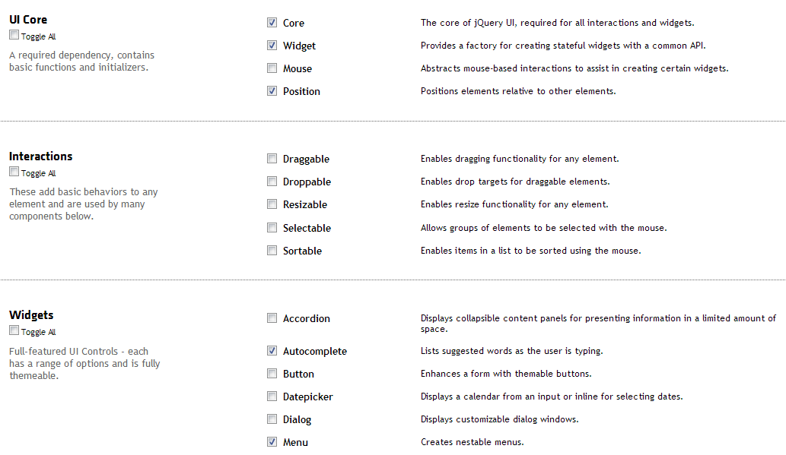

Why
| Delay | User reaction |
|---|---|
| 0 - 100ms | Instant |
| 100 - 300ms | Still fast |
| 300 - 1000ms | Server is loading |
| 1s+ | Goes to Facebook till it finishes loading? |
| 10s+ | It's broken |
HTTP page life cycle
HTTP Compression
Client sends
Accept-Encoding: gzip, deflate
Server responds with
Content-Encoding: gzip
Image Compression - Formats
| JPG | PNG | SVG |
|---|---|---|
|
7KB |
3KB |
2KB |
|
62KB |
413KB |
Image Compression - Tools
- PNGCrush
- JPEG Compressor
- GIF Reducer
- Google WebP and WebM
Use CDN
Content Distrubution Network
Minify JS & CSS
| bootstrap.css | 116KB |
| bootstrap.js | 55KB |
| bootstrap.min.css | 96KB |
| bootstrap.min.js | 25KB |
Use framework builders
Requires more effort to do
Use Image Sprites
One image instead of 140
[class^="icon-"], [class*=" icon-"] {
background-image: url("../img/glyphicons-halflings.png");
width: 14px;
height: 14px;
}
.icon-glass { background-position: 0 0;}
.icon-music { background-position: -24px 0; }
.icon-search { background-position: -48px 0; }
.icon-envelope { background-position: -72px 0; }
.icon-heart { background-position: -96px 0; }
Caching - Effect
Caching - How?
-
Expiresheader -
ETagheader
Bundle JS files & CSS files
application-hge73h3.jsapplication-39fe93rj.css